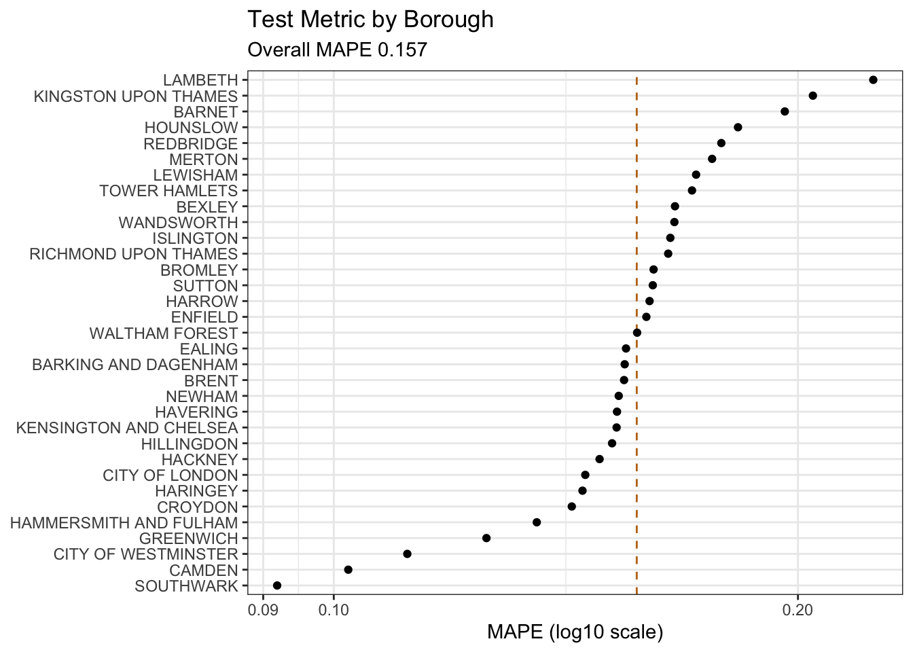

library(conflicted)
library(tidyverse)
conflict_prefer_all("dplyr", quiet = TRUE)
library(paletteer)
library(scales)
library(janitor)
library(trelliscope)
library(reticulate)
library(clock)
library(glue)
library(gt)
library(tictoc)
library(patchwork)
library(rvest)
library(ggfoundry)
library(usedthese)
conflict_scout()Reticulating Tibbles
R
python
deep learning
time series
Chunks of R and slithers of Python; in the caldron boil and bake
What to do when a model is available (or installable) only in Python, but you code in R?
I want to try the deep-learning time-series package GluonTS on average house prices by London borough. There is an R wrapper for this, but also (at the time of writing) an open issue installing it on Apple silicon.
So, into the caldron boil and bake; a blended approach we will take.
Libraries (R)
Theme (R)
theme_set(theme_bw())
n <- 5
pal_name <- "vangogh::Rest"
pal <- paletteer_d(pal_name)
display_palette(pal, pal_name)Read & Combine (R)
raw_df <- readRDS("raw_df") # file in github repo
# covid cases
covid_df <- tribble(
~date, ~covid_cases,
"2026-12-31", 0, # optimistic assumption!
"2025-12-31", NA,
"2024-12-31", NA,
"2023-12-31", 570463,
"2022-12-31", 8665437,
"2021-12-31", 9461237,
"2020-12-31", 2327686
) |>
mutate(
date = ymd(date),
covid_cases = zoo::na.approx(covid_cases)
)
# mortgage rates
morgage_df <- str_c(
"https://www.bankofengland.co.uk/boeapps/database/",
"fromshowcolumns.asp?Travel=NIxAZxSUx&FromSeries=1&ToSeries=50&",
"DAT=ALL&",
"FNY=Y&CSVF=TT&html.x=66&html.y=26&SeriesCodes=", "IUMBV42",
"&UsingCodes=Y&Filter=N&title=Quoted%20Rates&VPD=Y"
) |>
read_html() |>
html_element("#stats-table") |>
html_table() |>
clean_names() |>
mutate(date = dmy(date)) |>
filter(month(date) == 12) |>
rename(morg_rate = 2) |>
mutate(morg_rate = morg_rate / 100) |>
add_row(date = ymd("2024-12-31"), morg_rate = 0.0371) |>
add_row(date = ymd("2025-12-31"), morg_rate = 0.0320) |>
add_row(date = ymd("2026-12-31"), morg_rate = 0.0304) # poundf.co.uk/mortgage-rates
long_df <- raw_df |>
row_to_names(row_number = 1) |>
clean_names() |>
rename(district = na) |>
select(
district,
date = ncol(raw_df),
price = overall_average,
volume = total_sales
) |>
filter(
district != "Total",
!is.na(district),
.by = district
) |>
mutate(
across(c(price, volume), as.numeric),
date = date_build(date, 12, 31),
district = factor(district)
) |>
full_join(covid_df, join_by(date)) |>
full_join(morgage_df, join_by(date)) |>
complete(district, date) |>
arrange(date, district) |>
group_by(date) |>
fill(covid_cases, morg_rate, .direction = "up") |>
ungroup() |>
drop_na(district) |>
arrange(district, date)
long_df |> glimpse()Rows: 1,056
Columns: 6
$ district <fct> BARKING AND DAGENHAM, BARKING AND DAGENHAM, BARKING AND DA…
$ date <date> 1995-12-31, 1996-12-31, 1997-12-31, 1998-12-31, 1999-12-3…
$ price <dbl> 50568, 51692, 56234, 63893, 69511, 84149, 94483, 118906, 1…
$ volume <dbl> 1504, 1906, 2449, 2515, 2698, 2829, 3230, 3473, 3513, 3498…
$ covid_cases <dbl> NA, NA, NA, NA, NA, NA, NA, NA, NA, NA, NA, NA, NA, NA, NA…
$ morg_rate <dbl> 0.0813, 0.0827, 0.0740, 0.0636, 0.0692, 0.0620, 0.0565, 0.…| district | n |
|---|---|
| BARKING AND DAGENHAM | 32 |
| BARNET | 32 |
| BEXLEY | 32 |
| BRENT | 32 |
| BROMLEY | 32 |
| CAMDEN | 32 |
Visualise Examples (R)
long_df |>
mutate(district = as.character(district)) |>
filter(district %in% c("KENSINGTON AND CHELSEA", "RICHMOND UPON THAMES")) |>
pivot_longer(-c(date, district), names_to = "var") |>
mutate(var = fct_inorder(var)) |>
split(~ district + var) |>
imap(
\(x, y) {
scale_y <- if (str_ends(y, "price")) {
scale_y_continuous(
name = "Average\nPrice",
label = label_currency(scale_cut = cut_short_scale(), prefix = "£")
)
} else if (str_ends(y, "volume")) {
scale_y_continuous(
name = "Sales\nVolume",
labels = label_number(scale_cut = cut_short_scale())
)
} else if (str_ends(y, "covid_cases")) {
scale_y_continuous(
name = "Covid\nCases",
labels = label_number(scale_cut = cut_short_scale())
)
} else {
scale_y_continuous(
name = "5yr\nFixed",
labels = label_percent()
)
}
remove_strip <- if (!str_ends(y, "price$")) theme(strip.text = element_blank())
x |>
ggplot(aes(date, value)) +
annotate("rect",
xmin = ymd("2023-12-31"), xmax = ymd("2026-12-31"),
ymin = -Inf, ymax = Inf, alpha = 0.2, fill = pal[1]
) +
geom_line() +
scale_y +
facet_wrap(~district, scales = "free_y") +
remove_strip +
labs(x = NULL)
}
) |>
wrap_plots(
ncol = 2
) + plot_layout(
heights = c(3, 1, 1, 1),
axes = "collect_x",
axis_titles = "collect"
) +
plot_annotation(
title = "Two Example London Boroughs",
subtitle = "Homes of Chelsea FC and the Fictional Richmond FC",
caption = "Sources: Land Registry, ONS & BoE"
)
Install gluonTS (R)
py_install("gluonts", "r-reticulate", pip = TRUE, ignore_installed = TRUE)
py_list_packages("r-reticulate")Model (Python)
By prefixing long_df with r., Python can access the R object.
import pandas as pd
import numpy as np
import json
import torch
from gluonts.dataset.pandas import PandasDataset
from gluonts.torch import DeepAREstimator
from gluonts.dataset.split import split
from gluonts.evaluation import make_evaluation_predictions, Evaluator
from itertools import tee
from lightning.pytorch.callbacks import EarlyStopping
from lightning.pytorch.loggers import CSVLogger
from lightning.pytorch import seed_everything
full_ds = PandasDataset.from_long_dataframe(
r.long_df,
item_id = "district",
freq = "Y",
target = "price",
feat_dynamic_real = ["covid_cases", "morg_rate"],
past_feat_dynamic_real = ["volume"],
future_length = 3,
timestamp = "date")
test_ds, _ = split(full_ds, offset = -1)
val_ds, _ = split(full_ds, offset = -2)
train_ds, _ = split(full_ds, offset = -3)
seed_everything(20, workers = True)np.random.seed(123)
torch.manual_seed(123)
early_stop_callback = EarlyStopping("val_loss", min_delta = 1e-4, patience = 5)
logger = CSVLogger(".")
estimator = DeepAREstimator(
freq = "Y",
hidden_size = 100,
prediction_length = 1,
num_layers = 2,
lr = 0.01,
batch_size = 128,
num_batches_per_epoch = 100,
trainer_kwargs = {
"max_epochs": 50,
"deterministic": True,
"enable_progress_bar": False,
"enable_model_summary": False,
"logger": logger,
"callbacks": [early_stop_callback]
},
nonnegative_pred_samples = True)
test_predictor = estimator.train(train_ds, val_ds)Learning Curve (R)
version <- list.files("lightning_logs") |> parse_number() |> max()
log_df <- read_csv(str_c("lightning_logs/version_", version, "/metrics.csv"),
show_col_types = FALSE
)
log_df |>
select(-step) |>
mutate(
best_val = if_else(val_loss == min(val_loss, na.rm = TRUE), val_loss, NA),
best_epoch = if_else(!is.na(best_val), glue("Best Epoch\n{epoch}"), NA)
) |>
pivot_longer(ends_with("_loss"), values_drop_na = TRUE) |>
mutate(name = case_match(
name,
"train_loss" ~ "Training",
"val_loss" ~ "Validation",
)) |>
ggplot(aes(epoch, value, colour = name)) +
geom_line() +
geom_point(aes(y = best_val), show.legend = FALSE) +
geom_label(
aes(label = best_epoch),
size = 2,
nudge_y = 0.2,
show.legend = FALSE
) +
labs(
title = "GluonTS Learning Curve",
subtitle = glue("Lightning Log Version {version}"),
x = "Epoch",
y = "Loss",
colour = NULL
)
Test (Python)
test_fcast = list(test_predictor.predict(test_ds))
seed_everything(42, workers = True)np.random.seed(123)
torch.manual_seed(123)# Train and predict
forecast_it, ts_it = make_evaluation_predictions(
dataset = train_ds,
predictor = test_predictor,
num_samples = 1000
)
# Copy iterators
ts_it, targets = tee(ts_it)
forecast_it, predictions = tee(forecast_it)
# Calculate metrics
evaluator = Evaluator(quantiles=[0.05, 0.5, 0.95])
agg_metrics, item_metrics = evaluator(
ts_it,
forecast_it,
num_series = len(test_ds)
)Metrics (R)
By prefixing agg_metrics with py$, R can access the Python object.
aggregated <- as.numeric(py$agg_metrics["MAPE"])
col <- compose(as.character, \(x) pal[x])
py$item_metrics |>
select(item_id, MAPE) |>
mutate(item_id = fct_reorder(item_id, MAPE)) |>
ggplot(aes(MAPE, item_id)) +
geom_vline(xintercept = aggregated, linetype = "dashed", colour = col(2)) +
geom_point() +
scale_x_log10() +
labs(
title = "Test Metric by Borough",
subtitle = glue("Overall MAPE {round(aggregated, 3)}"),
x = "MAPE (log10 scale)", y = NULL
)
Final Model (Python)
estimator = DeepAREstimator(
freq = "Y",
hidden_size = 100,
prediction_length = 3,
num_layers = 2,
lr = 0.01,
batch_size = 128,
num_batches_per_epoch = 100,
trainer_kwargs = {
"max_epochs": 12,
"deterministic": True,
"enable_progress_bar": False,
"enable_model_summary": False,
},
nonnegative_pred_samples = True)
seed_everything(42, workers = True)np.random.seed(123)
torch.manual_seed(123)
final_predictor = estimator.train(full_ds)
future_fcast = list(final_predictor.predict(full_ds))Forecast (R)
fc_ls = c(py$test_fcast, py$future_fcast)
years_df <- fc_ls |>
map("mean_ts") |>
map(as.data.frame.table) |>
list_rbind() |>
mutate(
date = Var1,
fcast = Freq,
.keep = "unused"
)
quantiles_df <- map(1:length(fc_ls), \(x) {
fc_ls[[x]]$`_sorted_samples` |>
as_tibble() |>
reframe(
across(everything(), \(x) quantile(x, probs = c(0.05, 0.1, 0.5, 0.9, 0.95))),
quantile = c("pi90_low", "pi80_low", "median", "pi80_high", "pi90_high")
) |>
pivot_longer(-quantile, names_to = "window") |>
mutate(sample = x, district = fc_ls[[x]]$item_id)
}, .progress = TRUE) |>
list_rbind() |>
pivot_wider(names_from = quantile, values_from = value) |>
bind_cols(years_df) |>
pivot_longer(starts_with("pi"), names_to = c("pi", ".value"), names_pattern = "(.*)_(.*)") |>
nest(.by = c(district, sample)) |>
mutate(sample = row_number(), .by = district) |>
unnest(data) |>
mutate(pi_sample = str_c(`pi`, "-", sample) |> factor()) |>
arrange(district, date, sample) |>
mutate(date = str_c(date, "-12", "-31") |> ymd())
districts <- long_df |> summarise(n_distinct(district)) |> pull()Trelliscope (R)
panels_df <- long_df |>
left_join(quantiles_df, join_by(district, date)) |>
ggplot(aes(date, price)) +
geom_line() +
geom_ribbon(aes(y = median, ymin = low, ymax = high, fill = fct_rev(pi_sample)),
alpha = 1, linewidth = 0) +
geom_line(aes(date, median), colour = "white") +
scale_fill_manual(values = pal[c(1, 1, 5, 5)]) +
scale_y_continuous(labels = label_currency(scale_cut = cut_short_scale(), prefix = "£")) +
facet_panels(vars(district), scales = "free_y") +
labs(
title = glue("Price Forecasts for {districts} Postal Districts"),
subtitle = "Backtest & Future Forecasts with 80 & 90% Prediction Intervals",
caption = "DeepAR: Probabilistic Forecasting with Autoregressive Recurrent Networks",
x = NULL, y = "Avg Price", fill = "Prediction\nInterval"
) +
theme(legend.position = "none")
slope <- \(x, y) coef(lm(y ~ x))[2]
summary_df <- long_df |>
summarise(
last_price = nth(price, -4),
slope = slope(date, price),
.by = district)
panels_df |>
as_panels_df(as_plotly = TRUE) |>
as_trelliscope_df(
name = "Average London House Prices",
description = str_c(
"Time series of house prices by London post code district ",
"sourced from HM Land Registry Open Data."
)
) |>
left_join(summary_df, join_by(district)) |>
set_default_labels(c("district", "last_price")) |>
set_var_labels(
district = "Post Code District",
last_price = "Last Year's Avg Price"
) |>
set_default_sort(c("last_price"), dirs = "desc") |>
set_tags(
stats = c("last_price", "slope"),
info = "district"
) |>
view_trelliscope()R Toolbox
Summarising below the packages and functions used in this post enables me to separately create a toolbox visualisation summarising the usage of packages and functions across all posts.
| Package | Function |
|---|---|
| base | as.character[1], as.numeric[1], c[14], col[1], factor[2], if[4], is.na[2], length[1], library[15], list[2], list.files[1], max[1], min[1], ncol[1], readRDS[1], round[1], saveRDS[1], split[4] |
| clock | date_build[1] |
| conflicted | conflict_prefer_all[1], conflict_scout[1] |
| dplyr | across[2], arrange[3], bind_cols[1], case_match[1], count[1], filter[3], full_join[2], group_by[1], if_else[2], join_by[4], left_join[2], mutate[15], n_distinct[1], nth[1], pull[1], reframe[1], rename[2], row_number[1], select[3], summarise[2], ungroup[1], vars[1] |
| forcats | fct_inorder[1], fct_reorder[1], fct_rev[1] |
| ggfoundry | display_palette[1] |
| ggplot2 | aes[8], annotate[1], element_blank[1], facet_wrap[1], geom_label[1], geom_line[4], geom_point[2], geom_ribbon[1], geom_vline[1], ggplot[4], labs[4], scale_fill_manual[1], scale_x_log10[1], scale_y_continuous[5], theme[2], theme_bw[1], theme_set[1] |
| glue | glue[4] |
| janitor | clean_names[2], row_to_names[1] |
| lubridate | dmy[1], month[1], ymd[7] |
| paletteer | paletteer_d[1] |
| patchwork | plot_annotation[1], plot_layout[1], wrap_plots[1] |
| pillar | glimpse[1] |
| purrr | compose[1], imap[1], list_rbind[3], map[4] |
| readr | parse_number[1], read_csv[2] |
| reticulate | py_install[1], py_list_packages[1] |
| rvest | html_element[1], html_table[1] |
| scales | cut_short_scale[4], label_currency[2], label_number[2], label_percent[1] |
| stats | coef[1], lm[1], quantile[1] |
| stringr | str_c[7], str_ends[4] |
| tibble | add_row[3], as_tibble[1], tribble[1] |
| tictoc | tic[1], toc[1] |
| tidyr | complete[1], drop_na[1], fill[1], nest[1], pivot_longer[4], pivot_wider[1], unnest[1] |
| tidyselect | ends_with[1], everything[1], starts_with[1] |
| trelliscope | as_panels_df[1], as_trelliscope_df[1], facet_panels[1], set_default_labels[1], set_default_sort[1], set_tags[1], set_var_labels[1], view_trelliscope[1] |
| usedthese | used_here[1] |
| utils | head[1] |
| xml2 | read_html[1] |
| zoo | na.approx[1] |